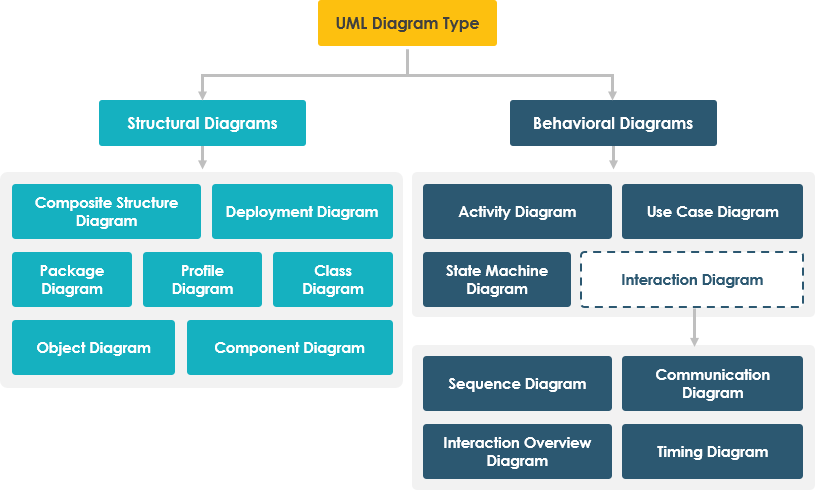

UML (Unified Modeling Language) is a visual language for representing the architecture, design and implementation of complex software systems — splitting a system into components you can actually reason about.
An application can span thousands of lines of code, and it's hard to keep track of the relationships and hierarchies inside it. UML diagrams break a software system into components and subcomponents so engineers can understand the design, code architecture and proposed implementation — and even model workflows and business processes.
Describe the static structure of a system — the things that make it up and how they're arranged.
| Diagram | Models |
|---|---|
| Class diagram | Classes, their attributes/methods and relationships |
| Object diagram | Instances of classes at a point in time |
| Package diagram | How elements are grouped into packages |
| Component diagram | Software components and their interfaces |
| Composite structure diagram | Internal structure of a class/component |
| Deployment diagram | Hardware nodes and where artifacts run |
Describe the dynamic behaviour — how the system acts and how parts interact over time.
| Diagram | Models |
|---|---|
| Activity diagram | Flow from one activity to another — an advanced flowchart |
| Sequence diagram | Messages exchanged between objects, in order |
| Use case diagram | Actors and the goals they achieve with the system |
| State diagram | States of an object and transitions between them |
| Communication diagram | Interactions organized around the objects involved |
| Interaction overview diagram | High-level flow combining interaction diagrams |
| Timing diagram | Behaviour of objects against a time axis |
